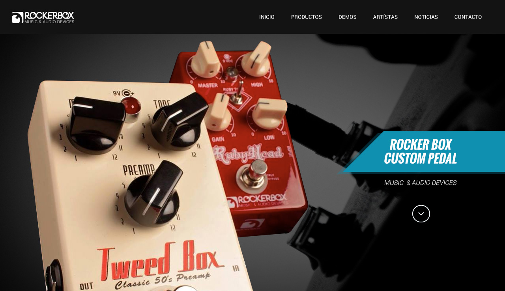

*Esta imagen es de referencia y no es una propuesta de diseño como tal, es simplemente un ejemplo de como se podría ver un primer pantallazo de su web con los estandares actuales de diseño y cuales son las secciones propuestas para el site.
Señores Rocker Box Custom Pedals,
Luego de diagnosticar la página, y viendo algunos sitios de referencia como www.boss.info, y www.jhspedals.com, los cuales me parecen los más cercanos a lo que podría ser para su marca, ya que como lo veo tienen un poco de ambas referencias, tal vez de una un inicio y de otra un norte como referencia. Creo que lo primordial es darle un toque más innovador, más actual y obviamente comercial pues imagino que la idea mostrar mejor sus productos y vender más.
Es muy importante darle ese aire de ingeniería por decirlo de alguna manera, creo que fabricar pedales de la manera que ustedes lo hacen, evoca mucho detalle y perfección, por eso creo que es importante transmitir lo mismo desde la página web, una mejor estructura, diagramación, y escogencia de los colores, tipografías, fotografías etc. todo en Rocker Box debe comunicar lo mismo para generar unidad de marca y fuerza en la misma.
Creo que el mapa del sitio con la info que hay actualmente debería se algo así: